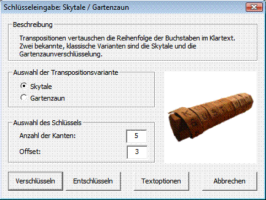
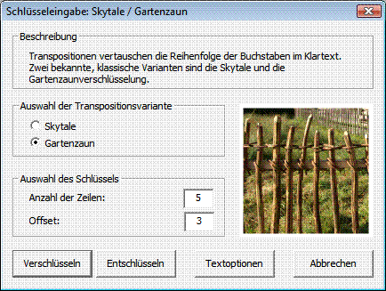

Sie erreichen diesen Dialog über den Menüeintrag Ver-/Entschlüsseln \ Symmetrisch (klassisch) \ Skytale / Gartenzaun.


Mit diesem Dialog können Sie einfache Transpositionen (Skytale / Gartenzaun) durchführen.
Bemerkung:
Der Button Textoptionen gibt Ihnen die Möglichkeit, das aktuelle CrypTool-Alphabet zu verändern. Das ist deshalb von Bedeutung, weil beide Implementierungen (Skytale und Gartenzaun) vor der Verschlüsselung alle Zeichen aus dem Eingabetext verwerfen, die nicht Teil des aktuellen CrypTool-Alphabets sind.